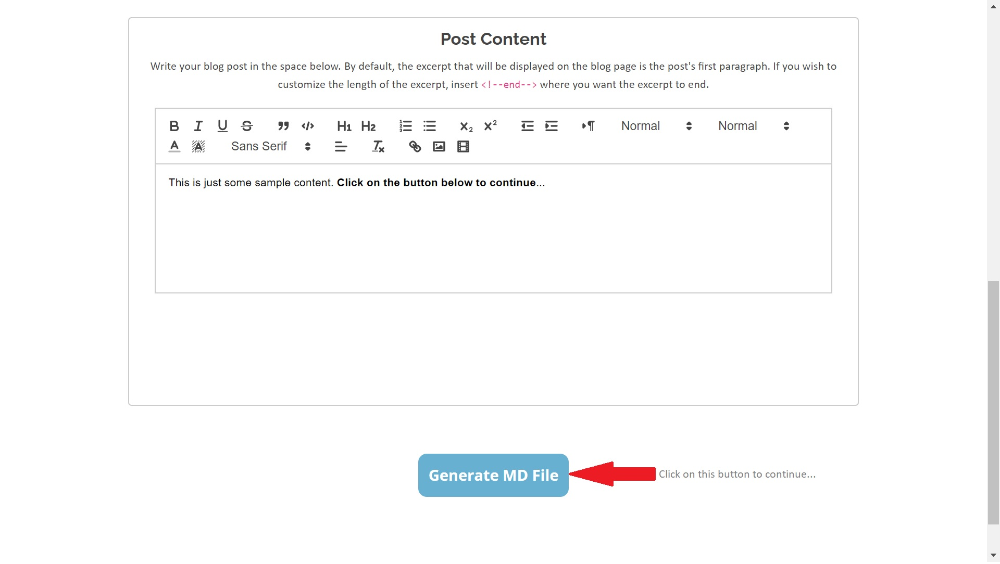
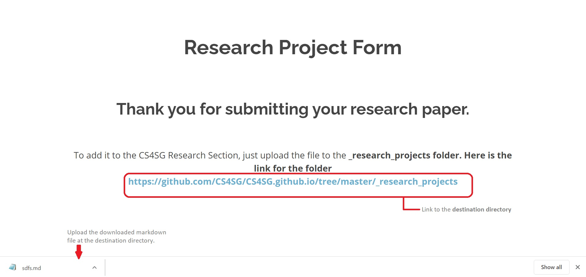

Welcome to CS4SG. This guidebook will walk through different aspects of the organization's website. For example- adding information or uploading data, how each section is build up, website's architecture, and how to make changes in the code.
You might want to enter information to the website. For example, adding research projects or information about a new grant that CS4SG just received! Please follow the following steps to add those inforation to the website...
-
Select the form according to the catagory of information
You can find out the list of all the forms you can fill. Please select the suitable catagory of form and fill it out.
Click here to see the links to all the forms. -
Fill out the form and click on "Generate MD File"
Once you have filled out the form correctly, please recheck it and click on "Generate MD File". This will download a Markdown format file on your local device.
 -
Follow the prompts after form submission.
After you submit the form, a prompt will appear giving directions on "where to upload the file" you just downloaded.
If the propmpt doesn't appear or you accidently refresh the page, here is a list of all the forms and their corresponding upload destinations:
-
{% for form in site.forms %}
- {{ form.title }}: {{ form.upload }} {% endfor %}
- To add any file(s) resources, please upload it here: https://github.com/CS4SG/CS4SG.github.io/tree/master/_resources
If you do not have access to upload the file to the destination folder, please contact kjoseph@buffalo.edu
 -
You are all set!
Congrats! Your changes has been published on the CS4SG website.
* Please note that the files uploaded to GitHub sometimes might take around 2-5 minutes to show up.
Here are a list of all the forms you can fill:
-
{% for form in site.forms %}
- {{ form.title }} {% endfor %}
If you need help in any of the steps or find any difficulty or technical error, please contact:
- Kenneth Joseph: for any organization related queries.
- Atri Rudra: for any organization related queries.
- Prakshal Jain: for any technical queries related to the website.
- Hope Kara: for any technical queries related to the website.